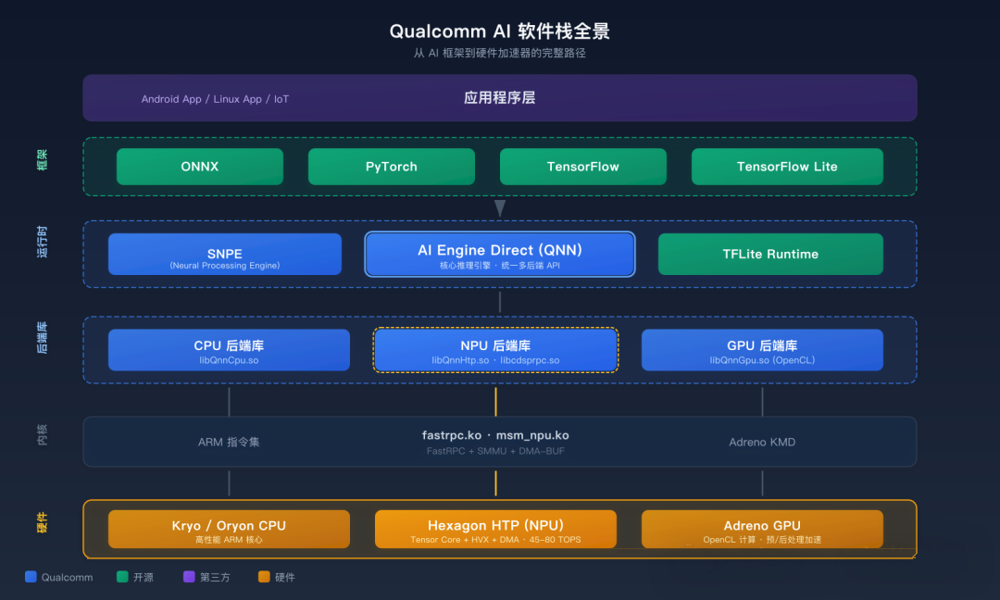

这是「高通 QNN 端侧 AI 部署全解析」系列的第一篇。两篇的结构：
- 本篇：QNN 全景 — 软件栈分层 + 三大后端 + API 核心调用
- 第二篇：部署实战 — 6 步上机流程 + 量化选型 + DDR 带宽优化
如果你在做端侧 AI，不管是手机、车机、还是 IoT，高通的 QNN 都是绕不过去的一层。但大多数教程只教你怎么调 API，不告诉你这套系统到底是怎么设计的、为什么这么设计。这个系列就是来填这个坑的。
先澄清一个常见误解：QNN 不是推理框架
你可能用过 ONNX Runtime、TFLite、甚至 llama.cpp。这些都是上层推理框架，它们的职责是加载模型、调度算子、管理内存。QNN 不在这一层。
它的全称是 Qualcomm AI Engine Direct，干的事情是 — 把推理框架的算子请求翻译成高通硬件能执行的指令，然后发给 NPU/GPU/CPU 去跑。用一句话说：QNN 是连接 AI 框架和高通硬件 IP 的翻译层。
它的前身是 SNPE（Snapdragon Neural Processing Engine），从 2023 年开始 Qualcomm 把重心转到了 QNN。两者的区别：
| 特性 | SNPE | QNN |
|---|---|---|
| 定位 | 端到端推理 SDK | 底层硬件抽象层 |
| 后端支持 | CPU/GPU/DSP | CPU/GPU/HTP（含 DSP） |
| API 风格 | 高层封装 | 低层 C API，更灵活 |
| 模型格式 | .dlc | .dlc + Context Binary |
| 多后端路由 | 框架内部决定 | Graph Partitioning 自动分配 |
| 当前状态 | 维护模式 | 主力发展 |
Qualcomm 官方文档（80-70014-15BY）里把 AI 软件栈画成了一张全景图，这张图非常重要，我基于它重绘了一个更清晰的版本：

从上到下 6 层，我逐层拆。
🏗️ 6 层软件栈逐层拆解
第 1 层：应用程序
你的 Android App、Linux 应用、或者 IoT 设备上的 AI 应用。这一层不直接调 QNN，而是通过下面的框架层接入。
第 2 层：AI 框架
开源框架层。ONNX、PyTorch、TensorFlow、TensorFlow Lite — 这些是模型的「来源」。你在 PyTorch 里训练一个模型，导出为 ONNX 格式，然后通过 QNN 的转换工具把它编译成 QNN 能执行的格式。整个链路：
PyTorch (.pt) → ONNX (.onnx) → QNN Converter → QNN Graph (.dlc)TFLite 模型比较特殊 — 它不需要转换，可以直接通过 TFLite Delegate 跑在 QNN 上。Qualcomm 提供了三个 Delegate：
| Delegate | 加速硬件 |
|---|---|
| AI Engine Direct Delegate (QNN) | CPU + GPU + HTP |
| XNNPACK Delegate | CPU |
| GPU Delegate | GPU |
也就是说如果你已经有 TFLite 模型，不用做任何转换，直接加个 Delegate 就能用 NPU 加速。
第 3 层：运行时引擎
这一层有三个选择：
- SNPE — 老牌选手，API 简单，但功能固化。适合快速原型验证。
- QNN (AI Engine Direct) — 当前主力。提供统一的 C API，支持所有后端，支持 Graph Partitioning（自动把模型拆到不同硬件上跑）。如果你在做新项目，直接用 QNN。
- TFLite Runtime — 开源推理引擎，通过 Delegate 机制调用 QNN 后端。适合已有 TFLite 生态的团队。
三者的关系不是竞争，而是分层：
TFLite Runtime
└── TFLite QNN Delegate
└── QNN Runtime (AI Engine Direct)
└── HTP/GPU/CPU 后端
SNPE
└── 内部也调用 QNN 后端（新版本）你看到了吧 — QNN 是最底层的那一个，其他两个都是基于它构建的。
第 4 层：后端库
QNN 的后端是以独立 .so 的形式存在的：
- libQnnHtp.so — NPU（Hexagon Tensor Processor）后端。这是性能最强的后端，专为矩阵运算优化，峰值 45-80 TOPS
- libQnnGpu.so — GPU 后端。基于 OpenCL，适合预处理/后处理或 NPU 不支持的算子
- libQnnCpu.so — CPU 后端。兜底用，所有算子都支持但性能最差
另外还有一个特殊的：
- libcdsprpc.so — FastRPC 客户端库。NPU 后端要通过它跟 Hexagon 处理器通信
这种「每个后端一个 .so」的设计很聪明 — 你只链接需要的后端，不会引入不必要的依赖。做嵌入式设备的时候，每一个 KB 都很宝贵。
第 5 层：内核驱动
- fastrpc.ko — FastRPC 内核模块，负责 ARM CPU 和 Hexagon DSP 之间的跨域通信
- msm_npu.ko — NPU 电源管理、时钟控制、SMMU 配置
- arm-smmu.ko — SMMU（System Memory Management Unit），做 IOVA → PA 的地址翻译，保证 NPU 能安全访问内存
第 6 层：硬件
三大硬件加速器：
- Kryo / Oryon CPU — 高通自研 ARM 核心。通用计算能力强，但 AI 推理效率不如专用硬件。
- Hexagon HTP (NPU) — 重头戏。包含 Tensor Core（脉动阵列）、HVX（向量引擎）、DMA Engine（数据搬运）、Scalar Core（控制逻辑）四个计算单元。骁龙 8 Gen 3 峰值 45 TOPS，8 Elite 到 80 TOPS。
- Adreno GPU — 高通自研 GPU。AI 工作负载可以通过 OpenCL 内核加速，也可以做预处理/后处理。
🔧 QNN API 核心调用流程
QNN 的 API 设计非常精简，核心就 6 步：
// Step 1: 获取 Provider (加载后端 .so)
QnnInterface_getProviders(&providers, &numProviders);
// Step 2: 创建 Backend
Qnn_BackendHandle_t backend;
QnnBackend_create(NULL, NULL, &backend);
// Step 3: 创建 Context
Qnn_ContextHandle_t ctx;
QnnContext_create(backend, device, NULL, &ctx);
// Step 4: 构建计算图
Qnn_GraphHandle_t graph;
QnnGraph_create(ctx, "my_model", NULL, &graph);
QnnGraph_addNode(graph, matmul_node); // 添加算子
QnnGraph_addNode(graph, softmax_node);
QnnGraph_finalize(graph, NULL, NULL); // 编译图
// Step 5: 执行推理
QnnGraph_execute(graph, inputs, numInputs,
outputs, numOutputs, NULL, NULL);
// Step 6: 释放资源
QnnGraph_free(graph);
QnnContext_free(ctx);
QnnBackend_free(backend);这 6 步看着简单，但每一步背后都有大量工作：
- getProviders — 动态加载后端 .so，查询它支持哪些能力
- Context_create — 初始化硬件资源，建立 HTP Session（这步在 NPU 后端会触发 FastRPC 连接）
- Graph_create + addNode + finalize — 构建计算图并编译。finalize 是最耗时的一步，它会做算子融合、内存规划、指令生成。7B 模型在 8 Gen 3 上 finalize 大约要 3-15 秒
- Graph_execute — 真正的推理执行。每次调用执行一次前向传播
💡 关键优化点：finalize 太慢怎么办？
QNN 提供了 Context Binary 机制 — 把编译后的执行计划序列化到磁盘，下次直接加载，冷启动从 3-15s 降到 0.3-1s。下一篇《部署实战》会详细讲。
🎯 三大后端的选型逻辑
什么时候用 HTP、什么时候用 GPU、什么时候用 CPU？
- 优先 HTP (NPU) — MatMul、Conv2D、Attention、LayerNorm 这些规则算子，HTP 的能效比是 GPU 的 5-10 倍。LLM 推理几乎 100% 应该走 HTP。
- GPU 做预处理 — 图像缩放、色彩空间转换、特征提取的前几层。GPU 的并行度高，适合这类非矩阵运算。
- CPU 兜底 — HTP 和 GPU 都不支持的算子，比如某些自定义算子、动态 shape 操作。CPU 什么都能跑，就是慢。
QNN Runtime 会自动做这个决策。它的 Graph Partitioning 机制会分析计算图，把支持 HTP 的算子路由到 NPU，不支持的 fallback 到 GPU 或 CPU。
这个设计跟 Android 显示合成器 SurfaceFlinger 的 HWC 策略完全同构：
| QNN Graph Partitioning | SurfaceFlinger HWC |
|---|---|
| 优先 HTP 执行 | 优先 DPU 硬件合成 |
| 不支持的算子 fallback GPU | 不支持的层 fallback GPU 合成 |
| 实在不行走 CPU | 实在不行走 CPU 软件合成 |
都是「硬件优先，逐级 fallback」的思路。
📊 跟其他方案的对比
| 维度 | QNN (AI Engine Direct) | TFLite | ONNX Runtime | llama.cpp |
|---|---|---|---|---|
| NPU 支持 | ✅ 原生 | ✅ 通过 QNN Delegate | ⚠️ 有限 | ❌ 纯 CPU/GPU |
| 多后端路由 | ✅ 自动 Graph Partitioning | ⚠️ 手动选 Delegate | ⚠️ 手动选 EP | ❌ |
| 量化工具链 | ✅ 完整 (INT4/8/16) | ✅ INT8 为主 | ⚠️ 依赖第三方 | ✅ GGUF 格式 |
| LLM 支持 | ✅ Genie Runtime | ⚠️ 有限 | ⚠️ 有限 | ✅ 生态丰富 |
| 冷启动优化 | ✅ Context Binary | ❌ | ❌ | ❌ |
| 高通平台适配 | ✅ 最优 | ✅ 良好 | ⚠️ 一般 | ⚠️ 无 NPU |
结论：如果你的目标平台是高通 SoC，QNN 是 NPU 利用率最高的方案。llama.cpp 生态好但没法用 NPU，纯 CPU 跑 7B 模型性能差 10 倍以上。
具体数字感受一下 — 同样跑 Llama 3 8B INT4，在骁龙 8 Gen 3 上：
- QNN HTP 后端：25 tokens/s（decode），功耗 3W
- llama.cpp CPU：2-3 tokens/s，功耗 5W，还烫手
- llama.cpp GPU (Adreno OpenCL)：8-10 tokens/s，功耗 4W
NPU 的能效比碾压 CPU/GPU。这不是「快一点」的差距，而是「能用 vs 不能用」的差距。用户能接受 25 tok/s 的流畅对话，但 2-3 tok/s 的逐字蹦出来？？？产品直接劝退。
🎯 架构师视角：设计哲学
QNN 的核心设计哲学是「分层抽象 + 多后端路由」。这跟 Android 的 HAL 层设计一脉相承 — 上层不需要知道底层是 NPU 还是 GPU，通过统一 API 调用，Runtime 自动做最优决策。
这种设计的直接好处：模型开发者写一次代码，自动适配不同 SoC 代际。骁龙 8 Gen 3 和 8 Elite 的 HTP 硬件完全不同，但 QNN API 调用方式一模一样。OEM 升级芯片，应用不用改一行代码 — 只要 Qualcomm 更新后端 .so 就行。
同样的模式在 GPU 世界已经被验证：OpenGL ES / Vulkan 对上层统一，Adreno driver 对下层适配硬件差异。QNN 把这套范式搬到了 NPU 领域。
跨域连接：
| QNN 概念 | 已有领域 | 同构关键点 |
|---|---|---|
| Backend .so 插件化 | Linux 内核模块 (insmod) | 运行时动态加载，不改框架 |
| Graph Partitioning | HWC 硬件合成策略 | 硬件优先，逐级 fallback |
| Context Binary | dex2oat AOT 编译 | 首次慢 + 缓存 = 后续快 |
| QNN Provider 接口 | Android HAL Interface | 分层抽象，解耦上下层 |
两个反直觉的认知
- 反直觉：QNN 不是框架级的东西，它比框架更底层。 你永远不应该直接在应用层调 QNN API — 应该通过 ONNX Runtime QNN EP 或 TFLite Delegate 间接使用。直接调 QNN 只有在你做端侧推理引擎开发的时候才需要。
- 反直觉：很多人以为 GPU 跑 AI 比 CPU 快就够了，不需要 NPU。 事实是 GPU 做推理的能效比只有 NPU 的 1/5 到 1/8。同样跑一个 7B 模型，GPU 功耗 6-8W，NPU 只要 2-3W。手机电池 5000mAh，NPU 能跑 2 小时，GPU 30 分钟就把电耗光了。端侧 AI 不是性能问题，是能效问题。
以上，既然看到这里了，你应该对高通 AI 软件栈的全景有了清晰画面 — 6 层架构，QNN 在中间做翻译，三大后端各司其职。下一篇我们进入实战，把一个 HuggingFace 模型一路部署到 NPU 上跑起来。